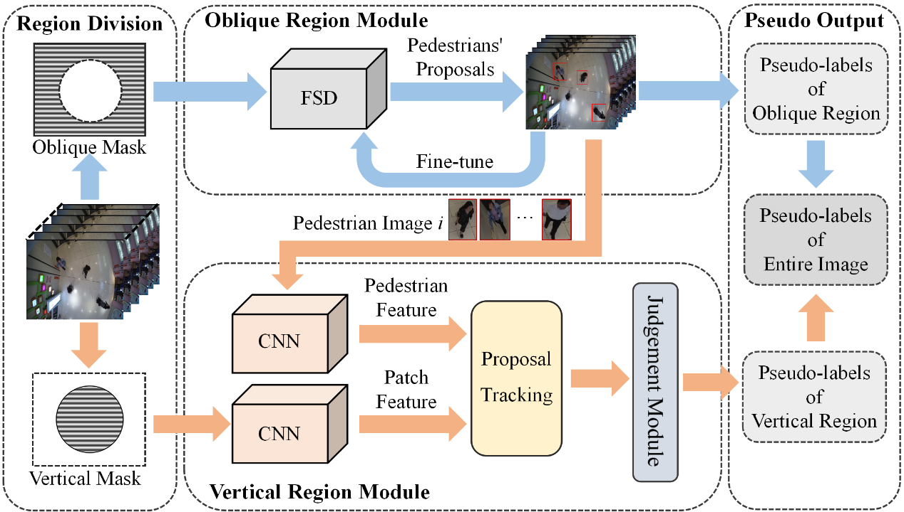

|
|
- Intelligent Indoor Spatial Sensing
- Artificial Intelligence Security
- 2D/3D Shape and Image Processing
Adversarial Attacks and Defenses
Cyclical Adversarial Attack Pierces Black-box Deep Neural Networks
Lifeng Huang, Shuxin Wei, Chengying Gao, Ning Liu
|
|
Enhancing Adversarial Examples Via Self-Augmentation
Lifeng Huang, Wenzi Zhuang, Chengying Gao, Ning Liu
|
|
Universal Physical Camouflage Attacks on Object Detectors
Lifeng Huang, Chengying Gao, Yuyin Zhou, Changqing Zou, Cihang Xie, Alan Yuille, Ning Liu
|
|
G-UAP: Generic Universal Adversarial Perturbation that Fools RPN-based Detectors
Xing wu, Lifeng Huang, Chengying Gao*
|
Crowd Counting

|
Scale-aware Progressive Optimization Network
Ying Chen, Lifeng Huang, Chengying Gao, Ning Liu
|
|  |
Self-Bootstrapping Pedestrian Detection in Downward-Viewing Fisheye Cameras Using Pseudo-Labeling
Kaishi Gao, Qun Niu, Haoquan You, Chengying Gao
|
Scale-Aware Rolling Fusion Network for Crowd Counting
Ying Chen, Chengying Gao, Zhuo Su, Xiangjian He, Ning Liu
|
|

|
ADCrowdNet: An Attention-Injective Deformable Convolutional Network for Crowd Understanding
Ning Liu, Yongchao Long, Changqing Zou, Qun Niu, Li Pan, and Hefeng Wu
|
Weak-structure-aware visual object tracking with bottom-up and top-down context exploration
Liu Ning, Liu Chang, Wu Hefeng*, and Zhu Hengzheng
|
|
Hierarchical Ensemble of Background Models for PTZ-based Video Surveillance
|